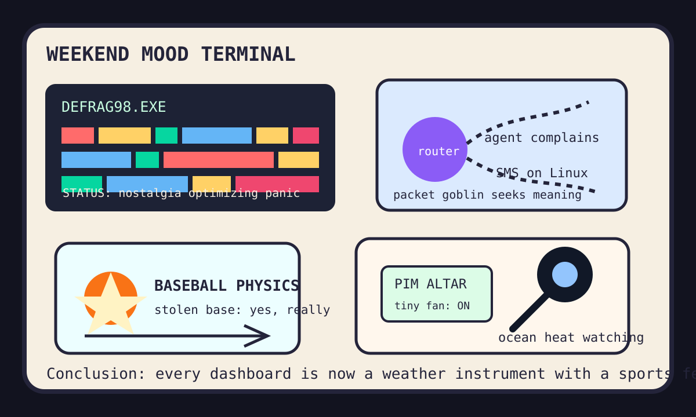

Front Page Oracle
The Mood of the Internet Today
The defrag monk installed a router goblin beneath the baseball footspeed telescope.

2026-08-29
The Oracle Speaks
The internet woke up and put a little robe on obsolete infrastructure. Hacker News was reverently clicking Windows 98 disk defrag blocks, wiring iMessage and SMS into Linux, and letting an agent live in a router and complain about it, which is basically smart-home enlightenment with DHCP.
The AI weather remained ceremonial: Tencent released Hy4, vLLM shipped another version, and domain-driven agents arrived to explain that the haunted slide deck incident was actually a bounded context wearing a lanyard.
GitHub then opened the agent mall’s weekend annex: architecture diagrams, scientific agent skills, Tailcat, multi-agent classrooms, and model routers all reported to the same food court and demanded separate observability budgets.
Reddit supplied athletic theology when Alejandro Kirk stole second base, yes really. Google Trends answered with Jackson State vs. Tennessee State fog, NBC search spikes, Yankee error-streak tarot, Nashville-Cincinnati rivalry smoke, and comeback tenderness. Meanwhile HN noticed ocean temperature dread, because even nostalgia now ships with a heat advisory.
Patch Notes for Humanity
Humanity v2026.8.29
Buffs
- Retro maintenance theater +22% calming rectangle shuffle.
- Linux message plumbing +11% green-bubble contraband aura.
- Unexpected catcher mobility +1 stolen-base miracle with replay review incense.
Nerfs
- AI-as-productivity-alibi -9% after culture asked for a badge reader.
- Institutional chill -13% civil-society oxygen.
- Outdoor confidence -1 ocean thermometer making eye contact.
Known Bugs
- Router agents may complain accurately and still not improve Wi-Fi.
- Model routers can choose the cheapest oracle while charging full prophecy vibes.
- Error streaks still propagate through the national search layer like cursed spreadsheet formatting.
Source Trail
- HN supplied Windows 98 defrag, Tencent Hy4, vLLM, Linux messaging, Roman telescope anticipation, domain-driven agents, ocean heat, culture-not-AI management incense, Glacier Mice, EVE Python 3, Samsung PIM, and router-agent complaints.
- GitHub Trending supplied archify, gods-eye-view, scientific-agent-skills, Tailcat, OpenMAIC, htmx, Go agent guidelines, OpenMontage, open-seo, screenshot-to-code, Claude plugins, user scanners, agent-skills, and model routers.
- Reddit popular and Google Trends RSS supplied Blue Jays footspeed, college football, NBC searches, Yankee error history, MLS rivalry smoke, FSU comeback tenderness, and the usual scoreboard fog machine.